Updated the project website with styled PHP pages and members-only
navigation, created a visual remote elevator-control interface,
improved the Gantt chart using JavaScript, and imported published
Google Sheets CSV data into the caffeine-study pages.
Added member-exclusive pages (after logging in), added an
elevator control page, and added a secret page for members
Improved the Gantt chart by changing the handling logic with JS
Wrote a JS function that converts "colspan=8" into td elements
and makes the table look pretty
Exported CSVs from our master excel sheet and imported them to the
website via JS function
Allows live updates of our caffeine study from our master sheet
I hate JS...
Key details
Purpose: add HTML styling to PHP pages and a few
new PHP files such that there are exclusive members pages
Outstanding: currently waiting for RY to finish the
backend handling... No updates as of this entry regarding it.
Result: added "elevator_control.php", "logout.php",
"members.php", and "super_secret.php"
Updating PHP
Added HTML styling to PHP pages
Previously, the PHP pages would literally load a blank white page that
echo'd back what the user entered during the login process. This
looked lame to say the least - figured I would update it with newer
page styling. One example is the request access page. The general PHP
logic (the text before DOCTYPE) stayed the same and I only added HTML
elements and custom CSS. Below is an example:
The regular request access HTML allows the user to enter text:
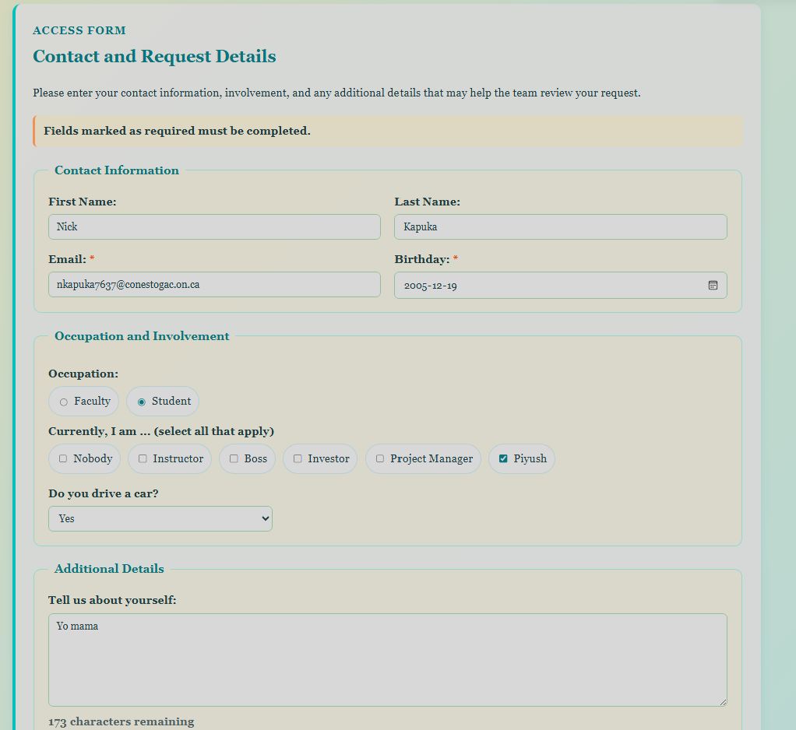
Request Access page before the form is submitted
But after requesting access, it ultimately created a page that looked
like:
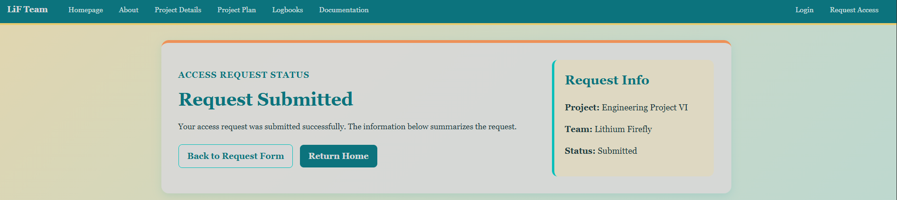
Styled confirmation page displayed after an access request is
submitted
With the submitted values below:
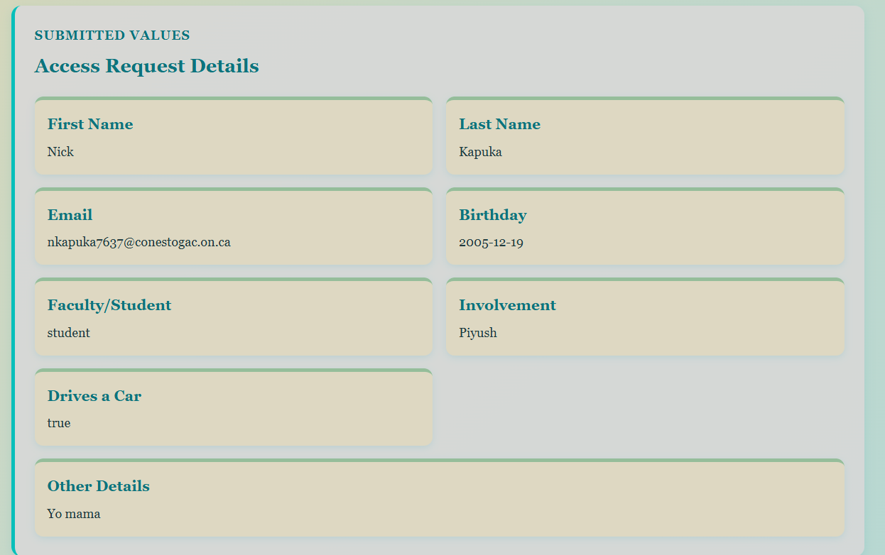
Organized display of the values entered in the access request
form
Which shows the values you entered back in an organized manner.
Later, once RY catches up and adds SQL and authentication (whenever
that is...) this can be fully functional.
Added Members-only page (after logging in)
Prior to this, the login would merely echo back what you entered - the
same as the request access page. Once again, I improved that by adding
styling, and creating a page that you get access to after logging in.
Until authentication (RY) is done, it will let anyone in, but I'm
mostly doing visual changes. Below are the images of the members-only
homepage.
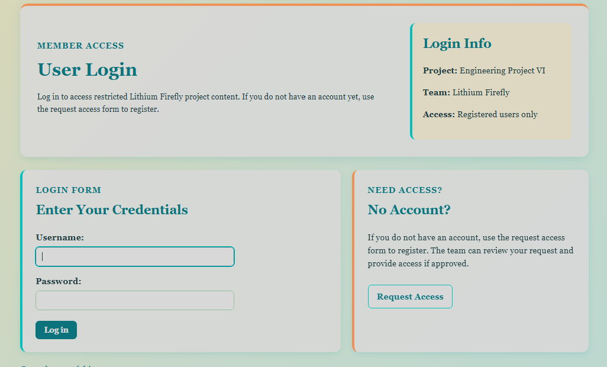
Dedicated login page for website members
This image shows the dedicated login page (although users can still
log in on the homepage).
After successfully logging in (assuming authentication is passed),
access is allowed to members page seen below.
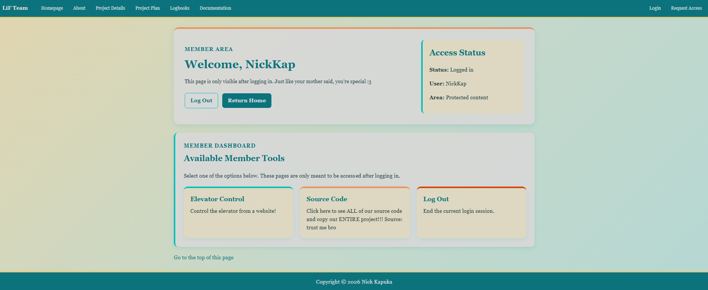
Members-only landing page displayed after a successful login
From here, there are three buttons.
Elevator control - allows the logged in user to control the elevator
platform remotely (visual for now)
Source code - allows user to view all of our precious source code for
free :3
Log out - allows user to log out
Elevator Control Page
Once logged in, you may control the elevator remotely. Of course it is
entirely visual until authentication and back-end communication is
properly established, but even being visual, it does update and allow
the elevator car to move/update the page.
See the static image of the webpage below:
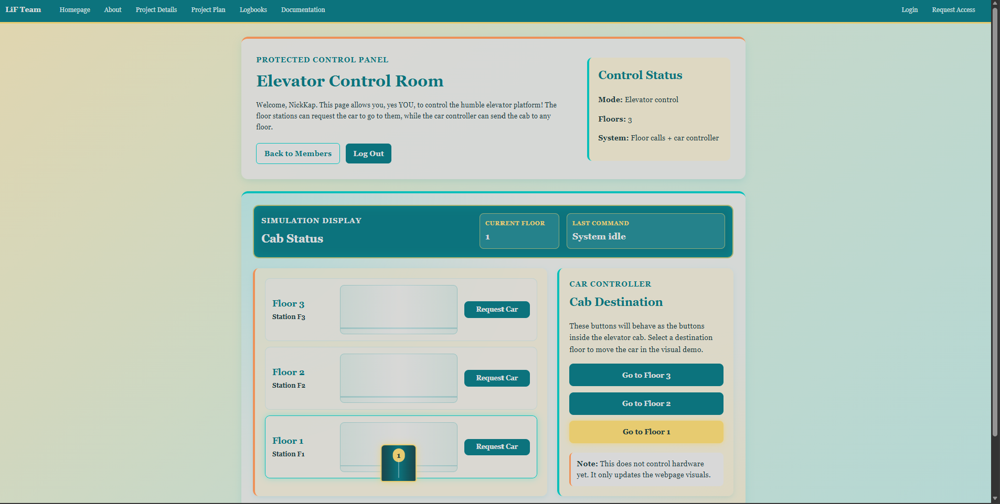
Front-end elevator control room interface
Below is a video of the entire process: Login home page, login
successful, members only page, elevator control page, elevator control
demo, back to members only page, logout
Demonstration of the login, members page, remote elevator
controls, and logout flow
// visual elevator demo
// this does not send commands to hardware yet. It only updates the webpage visuals
document.addEventListener("DOMContentLoaded", function () {
const elevatorCar = document.getElementById("elevatorCar");
const currentFloorDisplay = document.getElementById("currentFloorDisplay");
const lastCommandDisplay = document.getElementById("lastCommandDisplay");
const floorRows = document.querySelectorAll(".floor-row");
const floorButtons = document.querySelectorAll(".floor-request-button");
const carButtons = document.querySelectorAll(".car-floor-button");
const carScreen = document.querySelector(".car-screen");
// these positions match the current desktop tower layout
// floor 1 is lowest, floor 3 is highest
const carPositions = {
"1": "-354px",
"2": "-177px",
"3": "0px"
};
// moves the elevator car to the desired floor based on the floor selected and source (floor controller/cab controller)
function moveCarToFloor(floor, commandSource) {
if (!elevatorCar) {
return;
}
elevatorCar.style.bottom = carPositions[floor];
currentFloorDisplay.textContent = floor;
carScreen.textContent = floor;
// add text to the "last command" box to show who called/moved the elevator
if (commandSource === "floor") {
lastCommandDisplay.textContent = "Floor " + floor + " requested the car";
} else {
lastCommandDisplay.textContent = "Cab selected Floor " + floor;
}
floorRows.forEach(function (row) {
row.classList.remove("active-floor");
if (row.dataset.floor === floor) {
row.classList.add("active-floor");
}
});
carButtons.forEach(function (button) {
button.classList.remove("active-car-button");
if (button.dataset.floor === floor) {
button.classList.add("active-car-button");
}
});
}
// move car to floor when a floor button is clicked
floorButtons.forEach(function (button) {
button.addEventListener("click", function () {
moveCarToFloor(button.dataset.floor, "floor");
});
});
// move car to floor when a car controller button is clicked
carButtons.forEach(function (button) {
button.addEventListener("click", function () {
moveCarToFloor(button.dataset.floor, "car");
});
});
});
Improved Gantt Chart Logic
The Gantt chart logic was improved by making it have an "Excel" style.
It had distinct rows but now it has distinct columns.
Before:
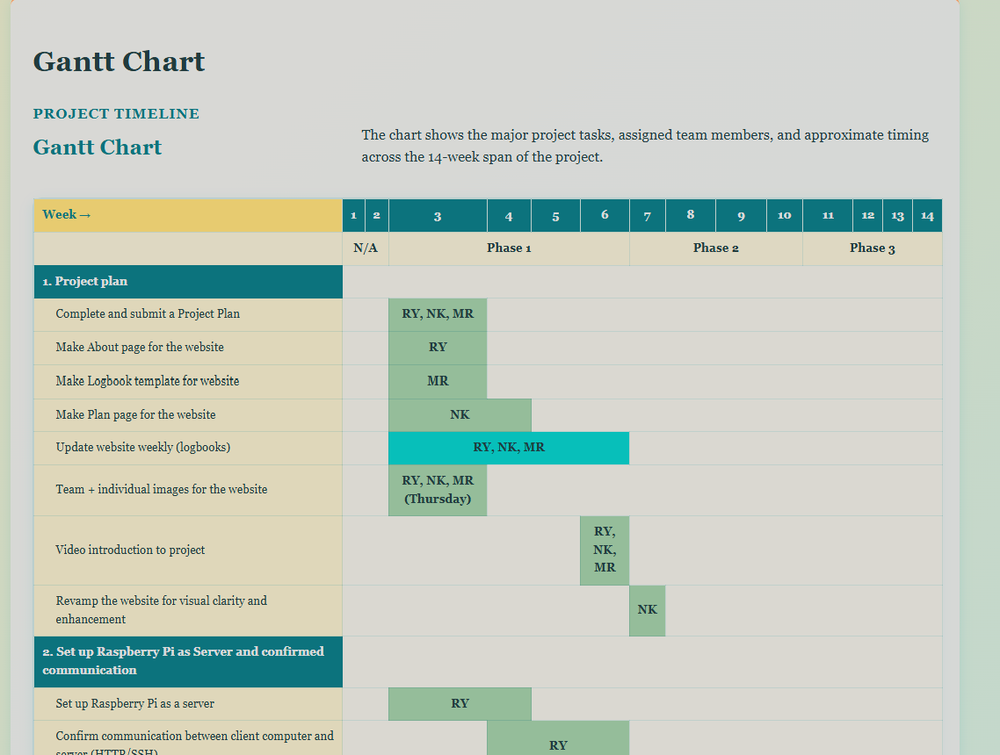
Gantt chart before the column and hover-behaviour improvements
the issue:
As seen, the rows go across but there are no distinct column markers
which looks a bit strange. There was also an issue of when the cursor
hovers over an entry, the entire row gets highlighted - this includes
the entry, the category (like "set up Raspberry Pi as a server"). The
colour was also quite bold - transparency must be reduced.
The patch that was made consisted of these changes:
Changing some of the "colspan=X" in the proj_plan.html (where Gantt
chart is)
Improving/redoing most of the CSS for rendering the Gantt chart
Adding a JS function to add "td" elements automatically for
formatting.
There were quite a few revisions.
The first major one was optimizing it entirely by removing HTML table
elements. Currently, it is rendered as:
Which is just a class HTML table with table, thead, th, tr, and td
elements. Then, for spacing, "colspawn=X" is used which works and is
visually fine, but for column logic it is quite poor.
The next revision featured a CSS-based version. This one replaced the
entire table with div elements and relied on CSS grids to do the
rendering. While very visually clean and quite intuitive, it was a
style that needed time to get used to and felt quite "advanced". Below
is another snippet of it:
As MR has been managing most of our Gantt chart so the decision was
made to stick with the style he's most comfortable - the classic
table.
Colspan was still annoying to work with so another version was born
that used "td" elements instead of colspan:
<tr>
<th class="sub">Complete and submit a Project Plan</th>
<td></td>
<td></td>
<td class="completed">RY, NK, MR</td>
<td></td>
<td></td>
<td></td>
<td></td>
<td></td>
<td></td>
<td></td>
<td></td>
<td></td>
<td></td>
<td></td>
</tr>
<tr>
<th class="sub">Make About page for the website</th>
<td></td>
<td></td>
<td class="completed">RY</td>
<td></td>
<td></td>
<td></td>
<td></td>
<td></td>
<td></td>
<td></td>
<td></td>
<td></td>
<td></td>
<td></td>
</tr>
But just from first glance, this would be very annoying to manage and
the most recent Gantt chart was almost 1.2k lines of text (compared to
~400) before.
So... Td made it look great, but colspan provides less lines and
visual clarity. If only there was a way to replace text elements. Oh
yeah, Javascript.
Needless to say, the approach seemed simple - allow MR to keep using
colspan while a JS function renders it as the clean "td" elements for
visual clarity. This was done using the function below:
/*
---------- Gantt table script----------
this script keeps the source HTML manageable while improving the visual table grid by replacing colspan with td
Source HTML can use:
<td colspan="8"></td>
After the page loads, this script converts that blank filler cell into:
<td></td><td></td><td></td>...
*/
document.addEventListener("DOMContentLoaded", function () {
expandBlankGanttCells();
checkGanttRows();
});
// expands blank colspan cells into real empty table cells
function expandBlankGanttCells() {
// find the Gantt table
const ganttTable = document.getElementById("Gantt");
// stop if the table is not on this page
if (!ganttTable) {
return;
}
// stop if this script already ran
if (ganttTable.classList.contains("gantt-expanded")) {
return;
}
// mark the table as expanded
ganttTable.classList.add("gantt-expanded");
// find all rows in the Gantt table body
const rows = ganttTable.querySelectorAll("tbody tr");
rows.forEach(function (row, rowIndex) {
// skip the phase rows (3 at the top)
// N/A | Phase 1 | Phase 2 | Phase 3
if (rowIndex === 0) {
return;
}
// skip major section rows
// 1. Project plan, 2. Raspberry Pi, etc.
if (row.classList.contains("gantt-section-row")) {
return;
}
// convert row.children into a real array
const cells = Array.from(row.children);
// first cell is the task name, so timeline cells start after it
const timelineCells = cells.slice(1);
timelineCells.forEach(function (cell) {
// only work on normal <td> cells
if (cell.tagName !== "TD") {
return;
}
// get the colspan number; if none exists, default to 1
const span = Number(cell.getAttribute("colspan") || "1");
// if the cell has no useful colspan, clean it up and stop
if (span <= 1) {
cell.removeAttribute("colspan");
return;
}
// only expand blank filler cells.
// do not expand coloured task/status cells.
if (!isBlankFillerCell(cell)) {
return;
}
// create one real blank <td> for each week this blank cell was spanning
for (let i = 0; i < span; i++) {
const newCell = document.createElement("td");
newCell.classList.add("gantt-empty-cell");
// insert the new cell before the old blank colspan cell
row.insertBefore(newCell, cell);
}
// remove the old large blank colspan cell
cell.remove();
});
});
}
// checks if a cell is just blank filler space
function isBlankFillerCell(cell) {
// if the cell contains text, it is not blank filler
if (cell.textContent.trim() !== "") {
return false;
}
// these classes (also colour the chart) mean the cell is a real task/status bar
const statusClasses = ["completed", "ongoing", "behind", "planned", "omitted"];
// check if classes present (not empty; false)
for (let i = 0; i < statusClasses.length; i++) {
if (cell.classList.contains(statusClasses[i])) {
return false;
}
}
// no text and no status class means it is blank filler
return true;
}
Essentially, this function grabs various elements, ignores
headers/major sections, and then works on the "colspan" attribute by
replacing the large colspan with various "td" elements. This
ultimately makes the Ganntt chart significantly nicer:
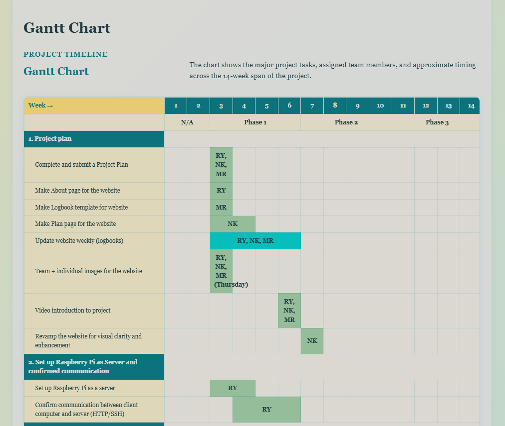
Updated Gantt chart with expanded week cells and cleaner column
alignment
Then, for phase 2:
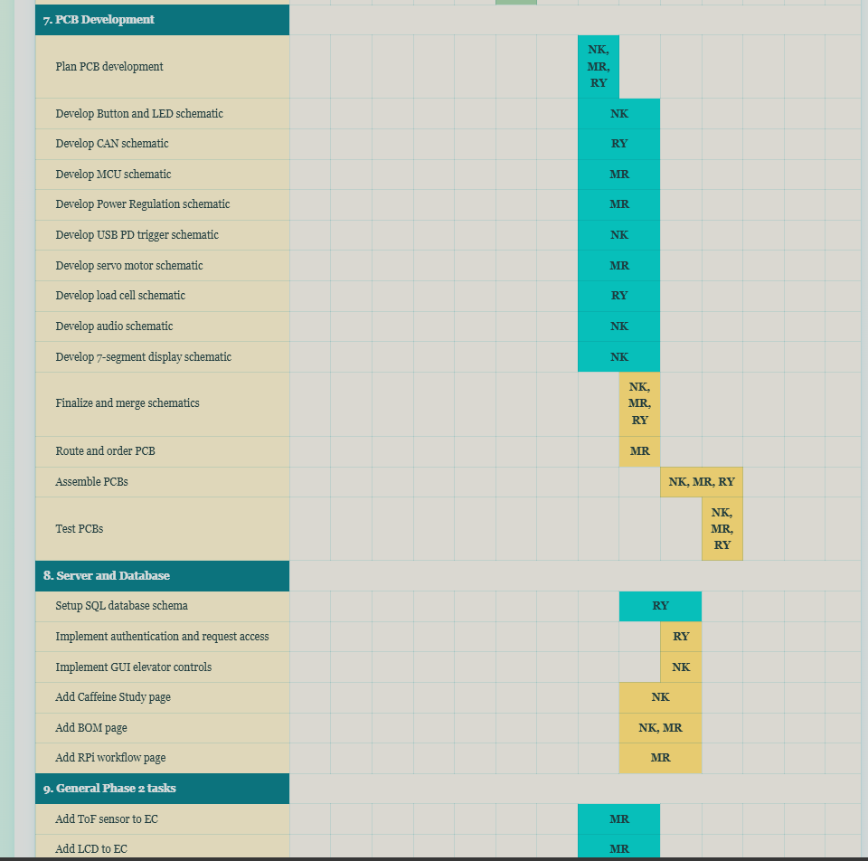
Updated Gantt chart showing the Phase 2 schedule
Now, the Gantt chart has clean columns and everything is neatly
aligned. The only thing left to do is paint the major sections, like
"8. Server and Database" grey or some other colour to make it stand
out as a section row and not be just a single white row... But that's
an issue for a later date.
CSV Export and Import into Website via JS
So... We've been keeping track of the amount of caffeine that our
group is consuming via a Google Spreadsheet. We wanted this data to be
able to be shown on the website, as well as (ideally) have it
dynamically update.
After looking into the "share" functionality of a Google Sheet, it can
be "published to the web" via a URL (which basically downloads the
CSV). Here is how it was done:
logging data:
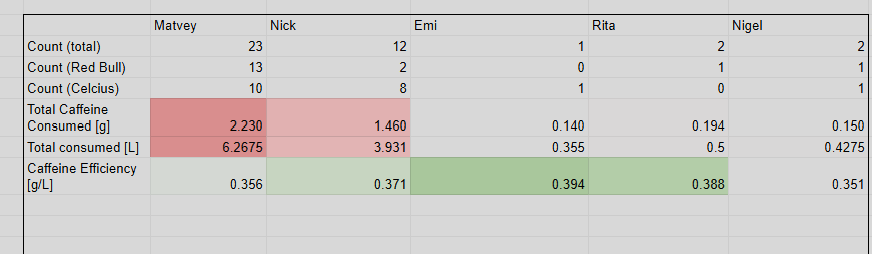
Energy drink data and spreadsheet calculations in the master
Google Sheet
This image is in our Spreadsheet and has various functions built in to
auto-grab the data and perform calculations to organize it. Like:
So... An additional sheet was made without this fancy math. This new
sheet merely referenced the values that the functions give. This was
done because this table sits in an awkward spot (rows 32 - 44; columns
K to P) and the functions were giving the CSV some issues for an odd
reason.
Regardless, it was ported into a separate sheet where the table can
start at A1, A2, etc. In each cell, a function referencing that
row/col from the original sheet was implemented as such:
=ARRAYFORMULA(Energy!A3:I)
Exporting data:
Which basically grabbed the entire table in question and put it onto
another sheet. From there, it can be exported as:
File -> share -> publish to web
Which opens a menu. From there, the document/sheet can be selected and
the style (web page, CSV, TSV, PDF, XLXS).
Simply selecting CSV gives a large Google link. Here's one example:
Copy-pasting this into the browser downloads a CSV. Here's a smaller
CSV embedded as an image (as I have a colour extension) to see what it
looks like when exported:
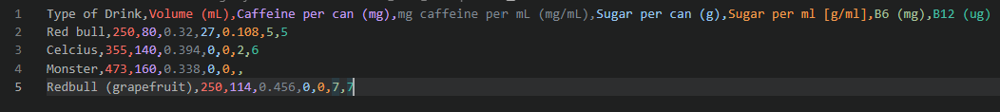
Published CSV lookup table containing drink information
It is sorted by type of drink, volume, caffeine per can, etc.
From there, the values can be stored into a 2D array and sorted using
JS. This was done using many functions for 2-3 separate tables so I
will show one commented example.
This was for the main log that actually logged each entry. See the
Google Sheets preview below:
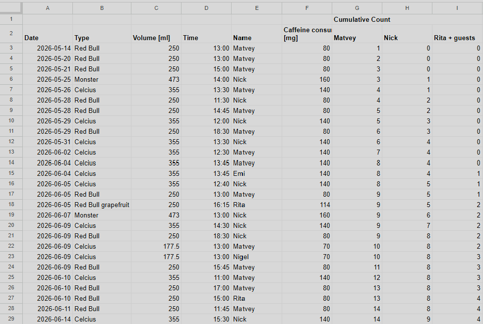
Main caffeine-consumption log in Google Sheets
This table was in the format of:
Date Drank
Type of Drink
Volume of Drink
Time Drank
Drank By
Caffeine content
Collecting Data:
The three remaining columns are just cumulative counters so they are
not too important. Naturally the CSV looks similar when it was
exported:
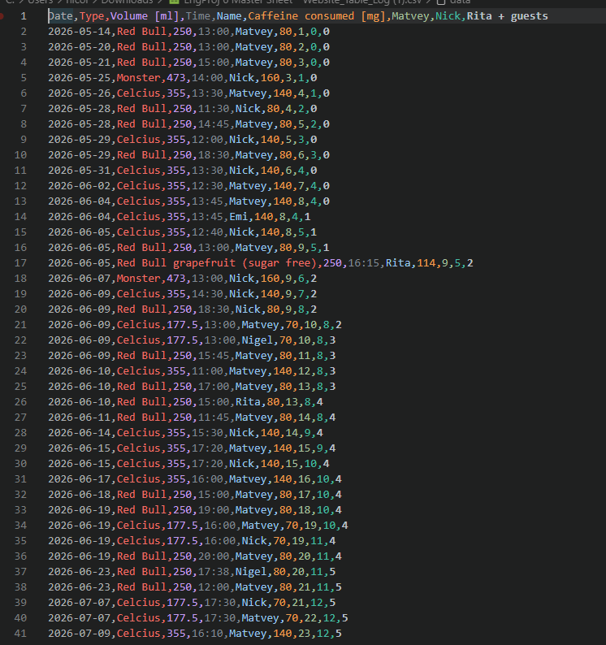
CSV export of the caffeine entry log
Processing the data:
From there, a JS function was made to utilize 2D arrays and port this
data into an HTML based table. See the function below:
// another CSV; ignore for this purpose
const caffeineCsvUrl = "https://docs.google.com/spreadsheets/d/e/2PACX-1vTgrDQkB5m1RcpNN90XCUvQruYOJ66Cj6YGTelbLFGnH6iFecsvqMJTCHsVePQC3NKzp-nDvymWFakM/pub?gid=1029732592&single=true&output=csv";
const caffeineLogCsvUrl = "https://docs.google.com/spreadsheets/d/e/2PACX-1vTgrDQkB5m1RcpNN90XCUvQruYOJ66Cj6YGTelbLFGnH6iFecsvqMJTCHsVePQC3NKzp-nDvymWFakM/pub?gid=77153223&single=true&output=csv";
document.addEventListener("DOMContentLoaded", function () {
loadCaffeineData();
loadCaffeineLog();
});
});
// global data storage for caffeine log
// can rebuild with re-fetching
let caffeineLogData = [];
// loads caffeine log from CSV
function loadCaffeineLog() {
// fetch CSV
fetch(caffeineLogCsvUrl)
// convert response into text
.then(function (response) {
return response.text();
})
// parse and build text once loaded
.then(function (csvText){
// convert into 2D array
// tableData[row][column]
caffeineLogData = cleanTableData(parseCsv(csvText));
// build dropdown filter
buildPersonFilter(caffeineLogData);
// build the entire log table
buildCaffeineLogTable(caffeineLogData);
})
// if something goes wrong, show error
.catch(function () {
document.getElementById("caffeine-log-container").innerHTML = "<p>Could not load caffine log, gg</p>";
})
}
// builds person filter dropdown
function buildPersonFilter(tableData) {
// find dropdown
const filter = document.getElementById("personFilter");
// if not empty
if(!filter || tableData.length < 2){
return;
}
// first row contains column names
const headerRow = tableData[0];
const nameColumnIndex = headerRow.indexOf("Name");
if (nameColumnIndex === -1){
return;
}
// array for names
const people = [];
// start at 1 because row 0 is header
for (let i = 1; i <tableData.length; i++) {
// grab persons name from current row
const person = tableData[i][nameColumnIndex];
// if not exist, add it
if (person && !people.includes(person)){
people.push(person);
}
}
// sort alphabetically
people.sort();
// add each person as an option in dropdown
people.forEach(function (person) {
// create new option element
const option = document.createElement("option");
option.value = person;
option.textContent = person;
// add option to dropdown
filter.appendChild(option);
});
// rebuild table when user changes dropdown
filter.addEventListener("change", function (){
buildCaffeineLogTable(caffeineLogData);
});
}
// builds a large table with log entries
function buildCaffeineLogTable(tableData) {
// find where the table will be placed
const tableContainer = document.getElementById("caffeine-log-container");
// find dropdown filter (for filtering by person)
const filter = document.getElementById("personFilter");
// if the container does not exist, stop
if(!tableContainer || tableData.length === 0) {
return;
}
// if no dropdown, default to showing all
const selectedPerson = filter ? filter.value : "all";
// first row
const headerRow = tableData[0];
// find which column contains the person's name
const nameColumnIndex = headerRow.indexOf("Name");
// if there is no "Name" column, show an error and stop
if (nameColumnIndex === -1) {
tableContainer.innerHTML = "<p>Could not find the Name column in the caffeine log.</p>";
return;
}
// start building the actual table
let tableHTML = "<table class='caffeine-table caffeine-log-table'>";
// table header
tableHTML += "<thead><tr>";
headerRow.forEach(function (header) {
tableHTML += "<th>" + header + "</th>";
});
tableHTML += "</tr></thead>";
// build table body
tableHTML += "<tbody>";
// loop through the table, start at 1 because 0 is header row
for (let i = 1; i < tableData.length; i++) {
const row = tableData[i];
// skip empty rows
if (!row || row.length === 0) {
continue;
}
// if a person is selected (not all), skip the rows that do not match that person
if(selectedPerson !== "all" && row[nameColumnIndex] !== selectedPerson){
continue;
}
// start one table row
tableHTML += "<tr>";
// add every cell in this row
row.forEach(function (cell) {
tableHTML += "<td>" + cell + "</td>";
});
// end row
tableHTML += "</tr>";
}
// close body and table itself
tableHTML += "</tbody>";
tableHTML += "</table>";
// put table back
tableContainer.innerHTML = tableHTML;
}
Displaying the data:
From there, it ultimately generated the final log table after
importing it into HTML:
<!-- log of the entire caffeine study -->
<section class="caffeine-log-section">
<div class="caffeine-heading">
<p class="section-label">Consumption Log</p>
<h2>Caffeine Entry Log</h2>
<p>
This table displays the individual caffeine entries recorded by the
team. The data is loaded from the published Google Sheets log table.
</p>
</div>
<div class="log-filter-row">
<label for="personFilter">Filter by person:</label>
<select id="personFilter">
<option value="all">All people</option>
</select>
</div>
<div id="caffeine-log-container" class="caffeine-table-wrapper">
<p>Loading caffeine log...</p>
</div>
</section>
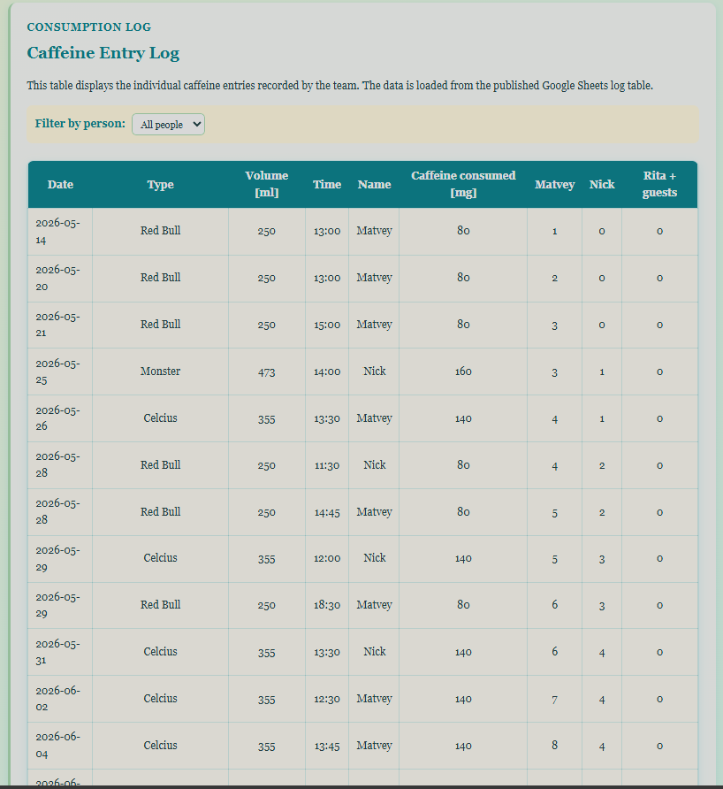
Caffeine entry log rendered as an HTML table
Additionally, the main log can be filtered to select by person to see
their individual entries:
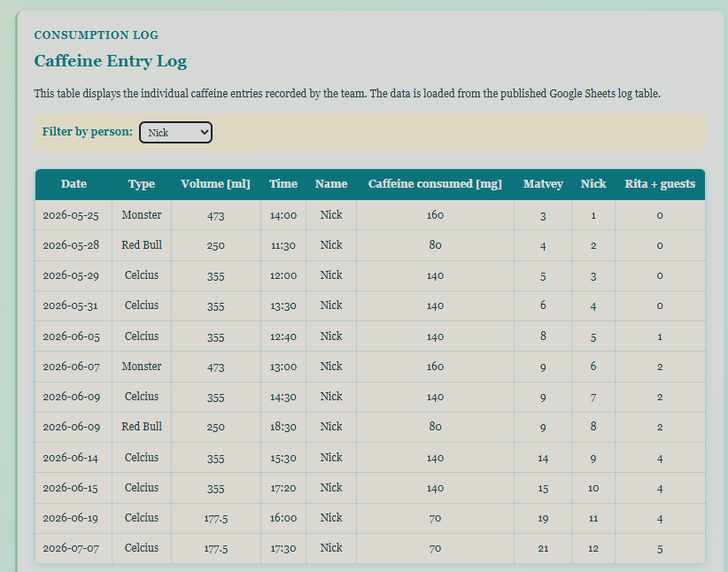
Caffeine entry log filtered to an individual team member
Additionally, there were two more tables and a chart.
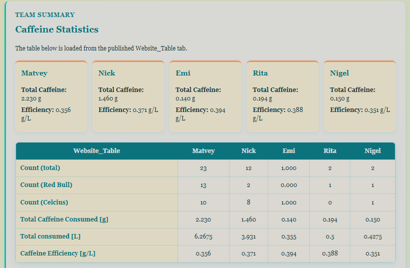
Team caffeine summary and consumption-efficiency table
Summary of who drank the most caffeine and their efficiency with
consuming it. Celcius are more caffeine-efficient while Red Bull fall
behind. Notice how Emi who only had one Celcius drink has the highest
caffeine efficiency
Another table was a lookup table (albeit this one was hard-coded using
an HTML table as these values do not change):
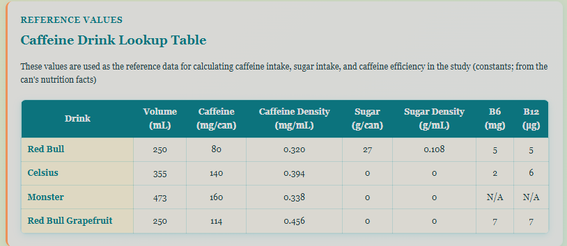
Hard-coded caffeine drink lookup table
Lastly was the visual summary - another Google Spreadsheet "publish to
web" export:
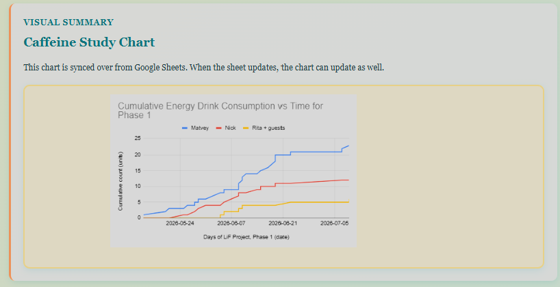
Published visual summary chart for the caffeine study
Technical notes
Nothing major for this entry - it was mostly website
updates/improvements.
Testing, results, or issues
Nothing major for this entry - it was mostly website
updates/improvements.
Current decision and next steps
Summary of the work done this entry:
[x] Add new PHP pages
[x] Members-only page
[x] Elevator control page
[x] Secret page
[x] Logout functionality
[x] Add missing pages from phase 1
[x] Caffeine study and importing tables/charts (NK)
[ ] R-Pi Deployment workflow (MR)
[ ] BoM - waiting until PCBs are complete (NK & MR)